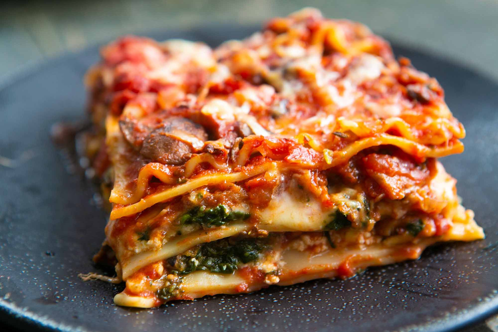

This is awesome. A nice change of pace from the typical red sauce lasagna. The only thing wrong with it was my own error: I used no bake noodles that never softened up all the way. If I ever use no-bake noodles again, I will parboil them first.
This is the best white lasagna I have ever had. May never go back to the tomato-meat one again. No change to recipe, just used an oval dish. Deliciousness!
In place of the broth I used tomato juice. Used 5 cheese in place of the mozzerello. Added a little eggplant and onions. I felt like it was missing something maybe minced garlic. We topped with spaghetti sauce. I will make again useing some garlic
Bring a large pot of lightly salted water to a boil. Cook lasagna in the boiling water, stirring occasionally until cooked through but firm to the bite, about 8 minutes. Drain.
Preheat oven to 375 degrees F (190 degrees C).
Melt margarine in a skillet over low heat; cook and stir flour, salt, and pepper into the melted margarine until smooth and bubbling, 2 to 3 minutes. Add milk and broth into flour mixture, stirring constantly; bring sauce to a boil. Stir wine into sauce and remove from heat. Stir Parmesan cheese into sauce until smooth.
Whisk ricotta cheese, egg, and egg white together in a bowl.
Heat olive oil in a skillet over medium-high heat; saute carrots, zucchini, and spinach until just becoming tender, 5 to 10 minutes. Stir vegetable mixture into ricotta mixture.
Layer 1/3 the lasagna noodles, 1/3 the ricotta-vegetable mixture, and 1/3 the Parmesan sauce in a 9x13-inch baking dish; repeat layering 2 more times with remaining ingredients, ending with a layer of mozzarella cheese.
Bake in the preheated oven until cheese is lightly browned and bubbling, about 30 minutes.